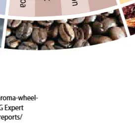

Kapitel 5 · Wein und Speisen kombinieren
Die Chemie der Aromen und das Aromarad
Als konstitutive oder native Aromastoffe bezeichnet man im Wesentlichen jene Verbindungen, die in Obst, Gemüse, Gewürzen und Kräutern durch den Pflanzenstoffwechsel entstehen oder sich bei Ernte, Lagerung, Trocknung oder (z. B. enzymatisch) nach dem Zerkleinern bilden. Sie können als angenehm empfundene Aromastoffe, aber auch als (untypische) Aromafehler auftreten. Konstitutiv gebildete Aromastoffe lassen sich nach ihrer Struktur gruppieren. Einige Stoffgruppen sind im Folgenden aufgeführt.
(Nach Stefanie Spuller, Aromen und Gewürze, Graz 2013)
Gruppe 1: Aliphatische Kohlenwasserstoffe (schwefelig, wachsig, grün). Darunter versteht man meist kurzkettige Fettsäuren und ihre Abbauprodukte wie Alkohole, Aldehyde oder Ester. Zu dieser Gruppe gehören auch Schwefelverbindungen, die für den Geruch von Zwiebeln, Knoblauch, Lauch und Schnittlauch verantwortlich sind.
Die niedrige Gruppennummer zeigt, dass sich ihre Gerüche leicht verflüchtigen. Diese Lebensmittel sollten daher als Würzaromen frisch verwendet, sofort gegessen und nicht erhitzt werden, damit sie zur Geltung kommen. Eines der duftintensivsten Moleküle dieser Gruppe ist Hexanal. Es kommt vor allem in grünen Äpfeln, Tomaten, Trauben, Olivenöl und grünem Tee vor.
(Vierich et al., 2012)
Gruppe 2: Acyclische Terpene (zitronig, fruchtig, blumig). Alle Moleküle, die nach Blüten und Zitrusfrüchten riechen, gehören in diese Gruppe, denn acyclische Terpene sind für die flüchtigen, blumigen Aromen in Kräutern und Gewürzen verantwortlich. Citral, ein Sammelbegriff für Geranial und Neral, kommt nicht nur in Zitrusfrüchten vor, sondern auch im Wacholder und bestimmt dessen Geruch. Wacholder eignet sich daher ideal zum Aromatisieren von Zitronenmarmelade. Er kann auch beim Räuchern von Fleisch für ein frisches Aroma sorgen. Ocimen, das nach Harz und Zitrus riecht, ist ein weiteres Duftmolekül dieser Gruppe. Es findet sich vor allem in Basilikum, Lavendel und Thymianblüten.
(Vierich et al., 2012)
Gruppe 3: Zyklische Terpene (balsamisch, kampferartig). Man unterscheidet monozyklische, bizyklische und höher zyklische Terpene.
Monozyklische Terpene sind recht flüchtig und sollten nur kurz gekocht werden. Dazu gehört das zitronenartige Limonen. Sie kommen auch in Kümmel, Fenchel und Eukalyptus vor. Zu den bizyklischen und höher zyklischen Terpenen zählen 1,8-Cineol und Pinen. Diese Terpene sind bereits „schwerer“ und daher weniger flüchtig. Höher zyklische Terpene zeichnen sich durch warme, balsamische, beruhigende, kampferartige und leicht harzige Töne aus. Sie kommen in Kräutern und Gewürzen vor, die sich dadurch optimal ergänzen oder ersetzen lassen.
(Vierich et al., 2012)
Gruppe 4: Sesquiterpene (dunkel, schwer-blumig). Die Struktur der Sesquiterpene ist sehr komplex, weshalb die Duftstoffe dieser Gruppe kaum flüchtig sind. Ihre Gerüche sind von dunklen, warmen Tönen geprägt. Dazu gehören Gewürze wie Pfeffer, Zimt und Nelken, aber auch Kräuter wie Oregano und Rosmarin. Farnesol etwa ist für den kräftigen, anhaltenden Duft von Maiglöckchen und Orangenblütenwasser verantwortlich. Die Duftstoffe dieser Gruppe wirken besonders in heißen Gerichten.
(Vierich et al., 2012)
Gruppe 5: Phenolische Verbindungen (tief und aromatisch). Das Spektrum dieser Gruppe ist recht groß und lässt sich in zwei Untergruppen teilen:
Gruppe 5a: Sie reicht vom Vanillin der Vanille bis zum Benzaldehyd der Bittermandel. Auch Anisaldehyd und Anethol aus dem Anis gehören dazu. Der Begriff „aromatisch“ bezieht sich auf die Struktur des Benzolrings. Die Gerüche dieser Gruppe werden als „schwer“, „rauchig“ und „nussig“ beschrieben. Viele Aromaten hinterlassen einen bitteren Geschmack. Wie vielfältig diese Verbindungen sein können, zeigt die aromatische Carbonsäure Benzoesäure: In der Lebensmittelindustrie werden Salze der Benzoesäure als Konservierungsstoff eingesetzt. In Preiselbeeren, Heidelbeeren und Pflaumen verhindert sie auf natürliche Weise das Wachstum von Pilzen und Bakterien. Ihr Aroma sorgt auch für den angenehmen Duft von Weihrauch.
(Vierich et al., 2012)
Gruppe 5b: Vertreter dieser Gruppe riechen noch intensiver und „öliger“ als die Duftstoffe der Gruppe 5a. Dazu gehören Zimtaldehyd und Zimtsäure, die für das Zimtaroma verantwortlich sind. Am vielseitigsten ist Eugenol: In Muskatnuss und Zimt sorgt es für den warmen, eher schweren Duft. Es kommt auch in Nelken vor, aber ebenso in Kräutern wie manchen Basilikumsorten und Lorbeer sowie in Bananen und Kirschen. Der Aromastoff Estragol findet sich nicht nur in Kräutern wie Estragon, Zitronengras und Basilikum, sondern auch in Gewürzen wie Muskatnuss, Anis und Fenchel. Daraus ergeben sich viele verschiedene Gewürz-Kräuter-Kombinationen.
(Vierich et al., 2012)
Gruppe 6: Heterozyklische Verbindungen
(Röstaromen). Diese Gruppe ist vor allem durch Röstaromen geprägt. Röstaromen können durch Erhitzen in der Küche entstehen oder bereits in Kräutern oder Gewürzen enthalten sein. Der Aromastoff Furfural ist bereits in Nelken vorhanden und riecht nach Karamell oder gebackenem Brot. Maltol dagegen entsteht erst, wenn Zucker erhitzt oder karamellisiert wird. Bekanntlich hat Zucker normalerweise keinen besonderen Geruch und schmeckt nur süß; wird er karamellisiert, entsteht eine süße, malzige Karamellnote. Die hohe Gruppennummer zeigt, dass die Moleküle dieser Gruppe kaum flüchtig sind und daher auch nach einigen Tagen noch riechbar sind.
(Vierich et al., 2012)
Gruppe 7: Nichtflüchtige Verbindungen (trigeminaler Reiz). Die Vertreter dieser letzten Gruppe verursachen einen scharfen oder anderen trigeminalen Reiz. Sie sind nichtflüchtig und durch Doppelbindungen gekennzeichnet. Dazu gehört Capsaicin, das Chilischoten ihre brennende Schärfe gibt. Reine Grundgeschmacksträger kommen in dieser Gruppe nie vor.
(Vierich et al., 2012)
Weinfehler und andere Mängel
Oxidierter Wein: Oxidierte Weine verlieren ihre Brillanz in Farbe und Geschmack. Tiefrote Weine werden bräunlich-orange und zeigen einen seltsamen Charakter von Essig und karamellisiertem Apfel. Weißweine sind viel oxidationsanfälliger als Rotweine, da der höhere Tanningehalt der Rotweine als Puffer wirkt.
Korkschmecker (2,4,6-Trichloranisol, TCA): nasse Zeitung, muffiger Karton oder nasser Hund.
Schwefelverbindungen (Dimethylsulfid, Methylmercaptan): faulig, verdorbenes Gemüse, Mercaptan in Verbindung mit Schwefelwasserstoff; faule Eier, Furz, verbranntes Gummi, gekochter Knoblauch oder Stinktier.
Gekochter Wein (Hitzeschaden).
Lichtgeschmack (UV-Lichtschaden). Stoffe aus der Kategorie der Fehlaromen, die bei Lebensmitteln oft den Eindruck von Qualitätsmängeln erwecken, sind häufig dieselben Stoffe, die in anderer Konzentration zu den erwünschten, positiv bewerteten Aromakomponenten gehören.
Mikrobielle und bakterielle Fehltöne: Neben der Hefe leben während der Gärung viele Mikroben. Tritt eine dieser Kolonien vor oder nach der alkoholischen Gärung zu stark auf, können verschiedene Fehlaromen entstehen.
Flüchtige Säure (Essigsäure): Geruch nach Balsamico-Vinaigrette.
„Glassplitter“ (Weinsteinkristalle): kleine Kristalle am Boden älterer Flaschen. Sie sind unschädlich; den Wein mit einem Filter dekantieren.
Riecht „grün“ (Kräuteraromen): Geruch nach Gras, Eukalyptus oder Spargel. Der häufigste dieser Stoffe ist Methoxypyrazin, ein anderer cis-3-Hexenol. Diese Aromen können Schwefel- oder mikrobiellen Weinfehlern ähneln, sind aber keine.
Riecht „nach Bauernhof“: Brettanomyces ist eine Wildhefe mit starkem Geruch. „Bretty“-Weine riechen nach Bauernhof, Heuballen, verschwitztem Sattel, Pflaster oder „Pferd“. Schon in sehr geringen Mengen verleiht Brett dem Wein oft einen metallischen Nachgeschmack.
Weitere Fehlaromen:
Erdig, muffig, dumpf (Geosmin); fettig, ranzig, Frittierfett ((E,E)-2,4-Nonadienal); fischig (Trimethylamin); heuartig, strohig, trockene Kräuter (3-Methyl-2,4-nonandion); käsig, schweißig (Valeriansäure); Klebstoff, Leim oder Lack (Ethylacetat); papierartig, pappig ((Z)-3-Nonenal); pilzartig, Waldboden (1-Octen-3-on); ranzig, fischig, „Kühlhaus“ (cis-4-Heptenal); ranzige Butter (Buttersäure); Schweinestall, fäkal (Skatol); schweißig, käsig (Isovaleriansäure).
Dieser Beitrag beruht auf: R. J. Harrington, Food and Wine Pairing: A Sensory Experience (2008); Luís Gradíssimo, Enogastronomia (2020); Glossário do Vinho; A. S. Curvelo Garcia et al., Análise sensorial (2017); Busch-Stockfisch, Praxishandbuch Sensorik (2002); J. Robinson, How to Taste: A Guide to Enjoying Wine (New York: Simon and Schuster, 2000), 17–26; D. H. Cook, „The Tongue ... A Sense of Taste“ (2000), www.iit.edu/~smile/bi9105.html (abgerufen am 15. August 2004); Stefanie Spuller, Aromen und Gewürze (Graz 2013); Peter Klosse (2013).
Das Aromarad*
Das Aromarad (siehe Abbildung) ordnet die Aromen in Gruppen wie fruchtig, blumig, kräuterig/vegetabil, würzig, nussig, süßlich, röstig/rauchig, erdig/muffig, chemisch, mikrobiell/animalisch sowie Fehltöne (faulig, schwefelig, ranzig) und nennt jeweils typische Beispiele, etwa Zitrusfrüchte, Pfirsich, Kirsche, Akazienblüte, frisch geschnittenes Gras, Minze, Eukalyptus, Pilz, Butter, Vanille, Karamell, Haselnuss, Kakao, Zimt, Nelke, Rauch, Humus, Heu, Essig, Klebstoff und Lösungsmittel.


*(Quelle: nach Wine Folly, https://winefolly.com/tips/wine-aroma-wheel-100-flavors/, und Olfactory and aroma training in sensory analysis, DLG-Expertenwissen 01/2017, https://www.dlg.org/en/food/topics/dlg-expert-reports/sensory-technology/dlg-expert-report-1-2017)